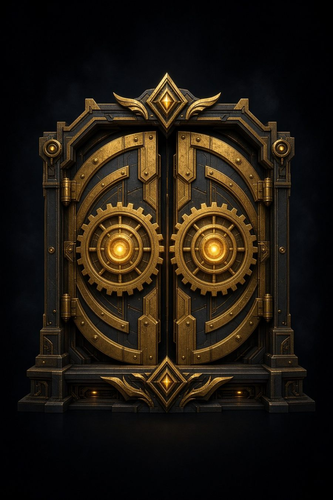

MSP Education — James Networks
This door is for people who actually work in an MSP — techs, owners, operators. Practical AI and workflow help. No brochure.
I sit in Clinton, Missouri and do this work. What’s on these shelves is what I’d hand a teammate on a Tuesday: prompts that survive a ticket queue, skills you can drop into a tool, short videos, and notes from the shop.
Reusable prompts for ticket work, client updates, and the sentences you type twenty times a week.
Open prompts →Playbooks you can run the same way twice — not product pages.
Open skills →Short (~2 min) AI how-tos. Thumbnail, a blurb, and a link out to YouTube.
Open videos →Longer notes from the shop. Empty until a post lands.
Open notes →